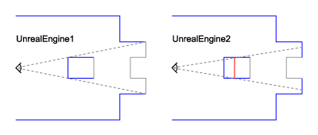

Occlusion Changes For UnrealEngine2
Occlusion behaviour has changed considerably from Unreal engine version 1 (Unreal and UT) to version 2 (UT2003 and beyond). As the Unreal Wiki changes to keep pace with developments, most of the material outlining changes between these two versions should be moved here to provide an overview and to simplify other pages.
Seeing occlusion in game
Try playing maps and typing "RMODE 1" into the console to see what is actually being rendered.
Occlusion only on demand
In UnrealEngine1, all BSP surfaces occlude everything: that is, they hide anything that is behind them when rendering, be it BSP geometry or meshes. This behaviour was no longer feasible with UT2003's much higher polycounts, so now BSP surfaces no longer hide meshes. They appear to hide meshes from the player's point of view, but in fact this is just due to over-drawing by the graphics card. Type "RMODE 1" into the Console to see what is really happening (see Console Commands for more information). Everything within the current zone is being rendered.
Control over occlusion is now placed in the hands of the mapper. This is where Antiportals come in: they are planes that block the rendering.

Changes in occlusion behsaviour: in UT2003, an antiportal is needed to hide surfaces from the player |
Zone Portal visibility
Zone portals are now nearly always visible in a particular zone. The ZP might be round a corner, but since BSP doesn't occlude, it counts as visible. It's rendered, and so the zone visible through is rendered, even though you can see none of this onscreen.
SuicideMissions{CLR}: The Zone portal information in this page contradicts with the information on the Map Optimization page. At issue is whether or not the engine actually traces vectors from the viewer's camera to the objects beyond a zone portal OR alternatively, renders EVERYTHING in a zone beyond the zone portal. It is unlikely that it is this latter option (which this page claims!) because that would lead to serious programmatic contradictions!!! If the next zone is fully rendered, then so will its zone portals to yet another zone, and so on, and soon, ALL connected zones would be rendered, "rendering" Zoning useless! (excuse the pun). We would have a zoning meltdown!
Furthermore, if we assume that Antiportals work in a similar fashion to portals (except that they have the opposite effect: occlude vs. un-occlude) then zone portals definitely take into account the vectors from a player's camera, so this page is almost certainly wrong, and should be fixed to match the information on the Map Optimization page. The rays from a viewer's eyes THROUGH zone portals (not the sheer visibility of the zone portal itself) determine visibility of polygons in the next zone.
stuff to be merged from the other page
Some History
This section to be moved & incorporated into Occlusion Changes For UnrealEngine2
In UT, level optimization was primarily about keeping the number of visible polygons to a sensible number (150 polygons was considered about the most you wanted in view in the beginning, although most PCs will handle 400 with ease these days). In addition the number of visible objects (or meshes) needed to be kept to a minimum.
BSP geometry (the only kind available in UT) automatically occluded things behind it. The tools available for ensuring good map performance were Zoning, the simplification of comlpex areas of geometry, and hiding as much BSP geometry and meshes behind other BSP geometry.
A Change in Occlusion Behaviour
BSP before UT2003 occluded BSP (as well as meshes), and the calculations for that were mostly done at map-build time by making a data structure (tree). This is a data-structure approach as opposed to an algorithmic approach, and was the entire point of BSP. The main algorithmic aspect of BSP occlusion is comparing the players location against the nodes of the tree at runtime, which is relatively cheap compared to most other occlusion algorithms, and the reason for using BSP. But Epic decided to make BSP no longer occludes BSP or meshes at all, leaving the occlusion up to the mapmaker.
Today, there are 3 methods for occlusion, and you can use all of them:
1) Use BSP mildly. It is best for floors, simply-shaped walls, large chunks of simply-shaped buildings, and so forth. BSP polygons do NOT occlude other BSP polygons, despite that the whole point of the BSP algorithm is that. BSP vertices can not be cached in the video card and instanced. Futhermore, BSP polygons are more slowly rendered than static mesh polygons.
2) Use Zones as much as they make sense. But do not try to zone areas that do not obviously look like zones, e.g. do not zone two open adjacent areas since you will *worsen* the efficiency of occlusion processing. Keep in mind that adjacent zones will occlude each others' meshes *except* for those meshes which can "seen" by the client through a zone portal.
3) Use Antiportals where zoning can not be used. Use them generously in outdoors areas.
4) Player fustrum. This is basically the "line of sight" of the player, except of course that it is not a line, but rather a "fustrum " (perspective). Whatever is not in the players 180* fustrum, is occluded.